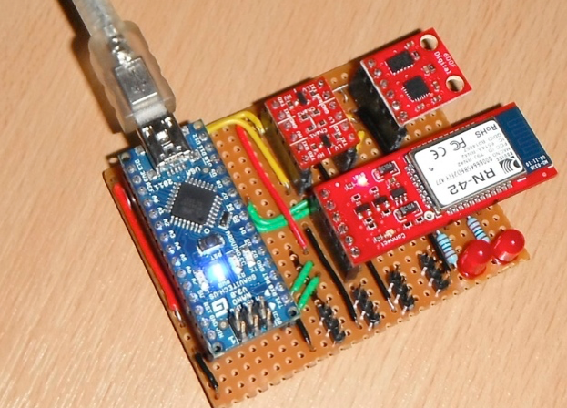
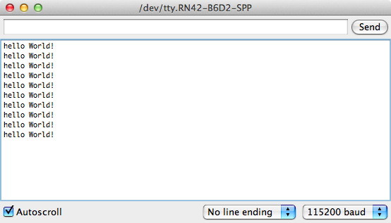

For the communication system, there are many choices available from the traditional route of model building and control. The main issue with these systems is that they are very expensive, so for my project I have chosen to use a Bluetooth module.

The module that I have chosen is the Spark fun Bluetooth Mate Silver from proto-pic.co.uk, this simply attaches to the RX and TX lines on the arduino processor that I’m using, this makes the communication very simple, helping to reduce the development time.

The Bluetooth module is mounted on the same main board as my processor, and only required a few quick solder connections to start getting some response on my computer. To start with a found that I wasn’t getting anything that I expected out of the board, but looking though the datasheets as well as a few useful posts on the sparkfun.com website, I found that the default baud rate for the Bluetooth module was 115200 not 9600, I had been trying to use. This quick fix meant that in no time at all I was able to send data to my computer, and also with a little bit of code be able to flash an LED.
Now to stop turning on and off LED’s and turn this into a quad rotor.